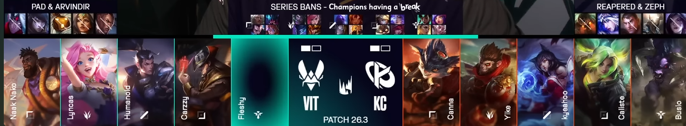
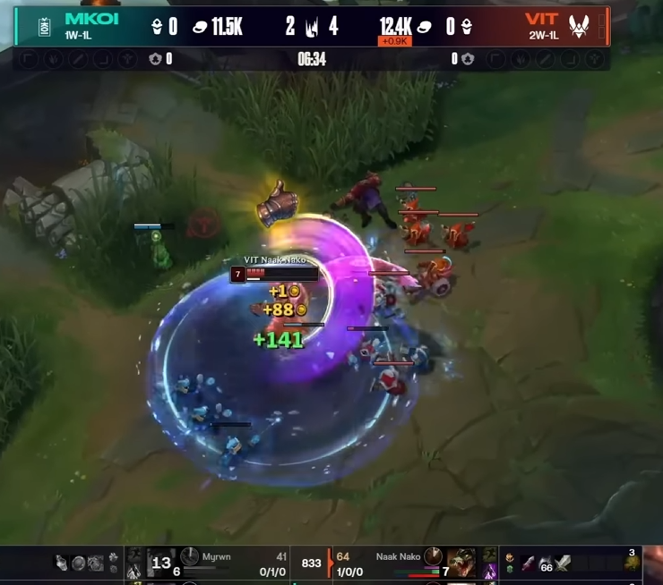

The team that was most worth watching in the LEC this year has been Vitality. The reason for this is other teams have formed solid identities of being either good or bad; Vitality has sat somewhere between these throughout 2026.
In retrospect of their disastrous playoff performance, it isn't much fun to call out their fraudulence post-mortem, instead I'd like to highlight the anatomy of Team Vitality and their fragility before playoffs began. Let's start at their initial low point, journeying through their highlights, finally to where they are now.
LEC Versus was disappointing, losing in a BO3 to Karmine Corp early in the playoffs where they drafted Seraphine + Braum and proceeded to end their winter split in 25 minutes.

Of course Seraphine and Braum is not an actual bot lane, but if inspected further you'll see more nuance to how Vitality arrived at this conclusion. Ashe Seraphine had already shown to be a staple, and its power is amplified specifically with Xin Zhao due to his kit synergizing with enchanter steroids. The biggest issue is their urgency to pick K'Sante, if they had wrapped Xin Zhao with Ashe Seraphine as their first three picks, Naak Nako would have 1 of either Ornn, K'Sante, and Sion to be their weakside tank. Instead they were left with a swift loss due to draft.
Onto their highlights, since this team was unique in their playstyle along with how they came to many of their close victories. Naak Nako had been playing out of his mind for most of the split.
Not to conflate this chart with comprehensive top laner skill, but Naak Nako was truly exceptional in finding individual leads and levying them for further mid-late game pressure. He would always punch above the weight of the matchup. A great example of this is their regular spring season match vs MKOI, where Myrwyn picks K'Sante into Naak Nako's Renekton, an extremely played out matchup that is considered stable or even winning for K'Sante. By 6:34, Naak Nako has collected a solo kill and a 30 CS gap on him, unheard of for this matchup.

The peak of Vitality this split was their close victory over G2. Naak Nako got his counterpicks, Carzzy was on his best champs, the team was playing well because they knew they could with the pieces in hand. BUT every game was filled with volatility, and the data supports this clearer than any other team.
This stat needs further interpretation to make sense. If Vitality's a bloody team, why are Fleshy and Humanoid so low in teamfight involvement? The answer is that the team DOES NOT prioritize teamfights, the team functions through consecutive skirmishing, disconnected fights that show no coherent planning behind them.
This playstyle is exacerbated by Carzzy, the most transparent glass cannon in the LEC.
Perhaps this is the remnants of Hylissang shaping who Carzzy is today, he's at the near-bottom of survivability while managing enough damage impact to compensate for it.
Let's fast-forward to Vitality's 0-6 playoff run. To put this catastrophe into perspective, I don't even need to do research to know this is the first time globally a 1 seed lost 6 consecutive games in the playoffs. So what happened?
two series swept
The MKOI series showed the lack of progression draft-wise. Lyncas had shown his cards throughout the split, so his Jarvan and Pantheon were off the table for all 3 games. To call his other champions sub-optimal might be understating it, his Vi was hounded by Elyoya and was the sole reason for the game 1 loss. The rest of the series is summarized by Naak Nako being forced onto Gragas game 2, and Olaf into Varus game 3, Vitality just ran out of steam in draft momentum.
GiantX is a whole different story. Naak Nako DID find his picks and he DID get meaningful advantages, but the team imploded. Every fight was like a non-serious version of professional League of Legends. The players were taking turns in making game-ending blunders, and Humanoid made the most egregious of them all. Game 2 was an exceptional case-study in how to mechanically misplay every chance possible, each time an opportunity arose for Humanoid to clutch up and Zhonyas or flash, but neither happened and he threw.
Outside of the game, Vitality's case for being the most interesting team gets even better somehow. The insight into their comms directly supports how non-serious this team holds themselves. I'm not opposed to treating moments lightly to preserve morale, but everything is on an axis. Clearly this team needs to shape up mentally, treat scrims and stage matches more seriously.
Before ending, let's look at the team's anatomy in CAR performance:
The biggest surprise people will find is Fleshy being this high. He's been a silent driver in complementing the lanes, even more than Lyncas. He will route topside to find opportunities, which aren't difficult to come by when Naak Nako is your top laner. Lyncas, Carzzy, and Humanoid being below the team average does not mean that they are below average league-wise, it just means that Naak Nako and Fleshy are pulling their weight in team CAR (not a verdict of full-team performance)
I still believe Vitality has the tools to become a top team in the league, each player has sparks of mechanically high-tier gameplay, but it's hard to imagine them materializing that strength in time. I'd theorize that they lose in the playoffs once again, and they'll look for roster changes in the jungle so they can keep the Czech synergy and not lose their strong members. My number one priority in the off-season is getting Zicssi from Solary, he's similarly confident but has the actual prowess of a strong jungler.